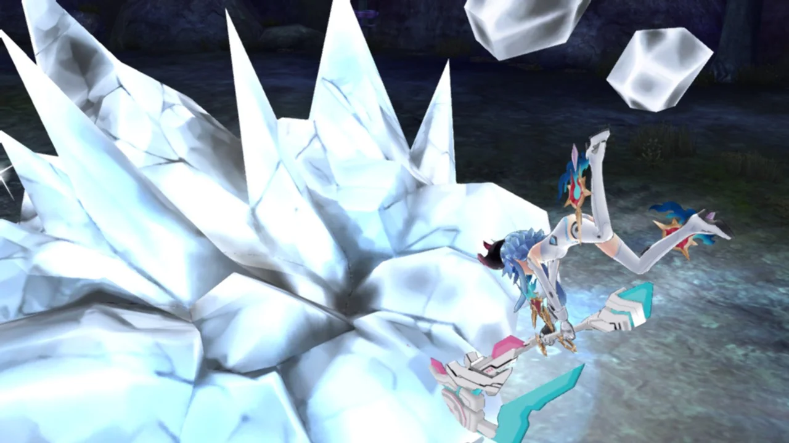
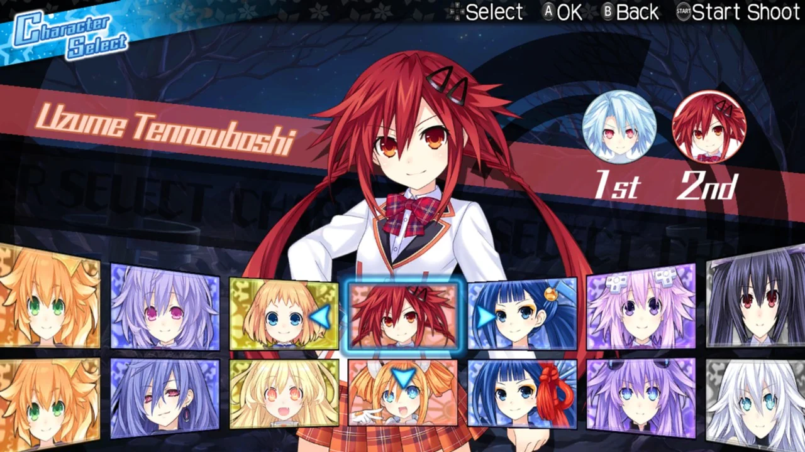
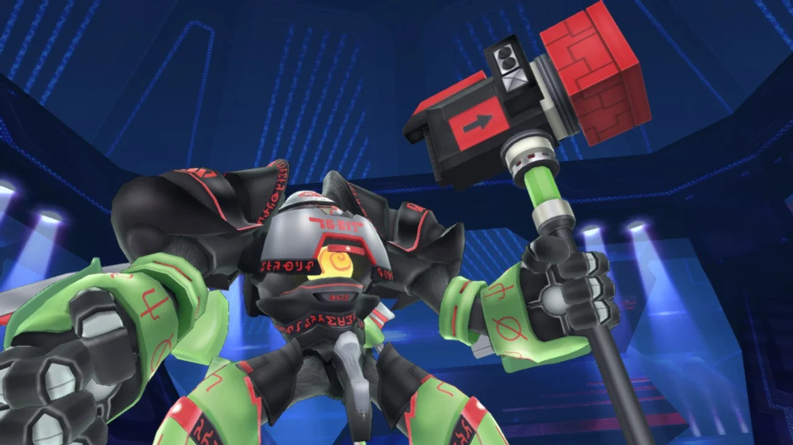
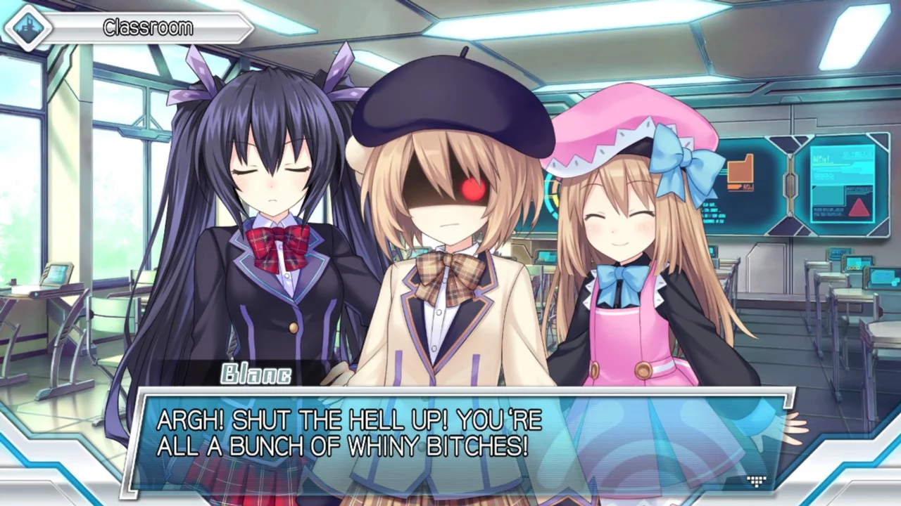
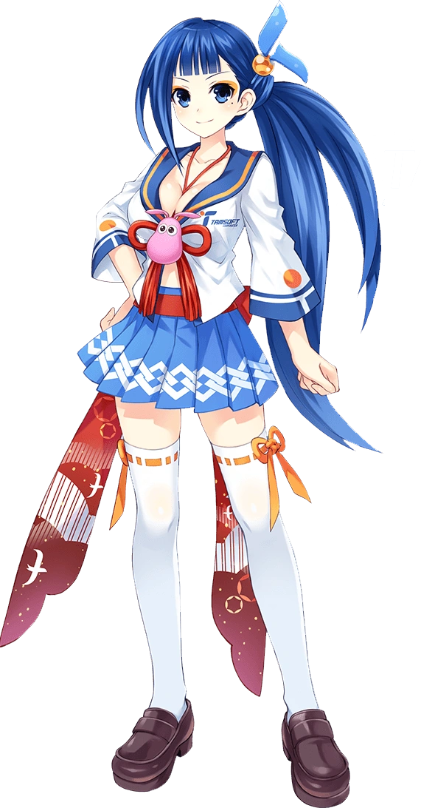

{kind=link}
In a world where Hyperdimension Neptunia U didn't exist MegaTagmension Blanc + Neptune VS Zombies wouldn't be too bad despite its insufferably long title, unfortunately that's not this world!
Hyperdimension Neptunia U: Action Unleashed, this game's predecessor, was one of the simplest, most mindless button-mashing musous I've ever played, zero depth, zero complexity, a short run-time, and it thrived in that!
Despite being a sequel and reusing much of the framework of Neptunia U, the one thing that MegaTagmension Blanc failed to carry over was the philosophy of focusing solely on making combat as fast and fun as possible.
Instead MegaTagmension Blanc diverts its attention away to every other element of the game, something that isn't a bad idea in concept, as much as I liked Neptunia U, if you didn't enjoy the mindless button-mashing and satisfying animations it really didn't have much else of value.
However, that single-minded priority on flashy, simple moment-to-moment action was what made Neptunia U good, restraining that one strong area to bring attention elsewhere only works if everything else is just as great, but MegaTagmension Blanc definitely does not make up for those downgrades with an overall better package...
MegaTagmension Blanc's most defining flaw is its extremely clunky feeling combat, something that actually took me quite a while to fully understand the cause of.
Most of MegaTagmension Blanc's foundation is exactly the same as Neptunia U's: same mechanics, same points of delay, on paper one should be no better or worse than the other.
MegaTagmension Blanc is a prime example of how the subtleties in animations and gameplay mechanics can make a massive difference in how good a game feels to play.

But both of these 'problems' are present in Neptunia U as well, yet I don't complain about them in that game, so what makes them so bad here? The answer is the nuances in attack animations. One thing that MegaTagmension Blanc did change from Neptunia U is attack animations of returning characters, movesets are largely the same with some minor expansions through SP Skills, but the animations associated with those movesets are altered. MegaTagmension Blanc is filled with deceptively long attack animations: too many hold frames for otherwise quick attacks, multi-frame cooldown periods at the end of most actions, over-the-top animations that look great in isolation but needlessly extend the flow of combos. I should clarify that in almost all of their games Tamsoft does some fantastic animation and visual effects work, even in this game attacks look great, but looking great can sometimes come at the expense of feeling great, and it's not an easy balance to maintain!
Individually, none of these are game-ruining, but they don't mix very well and the minor changes made from its predecessor were just barely enough to expose how messily these pieces all fit together.
It's super unfortunate how flawed all of this is too, because the new characters introduced are fantastic! Uzume and Yellow Heart are way more fun than anyone brought over from Neptunia U!


Combat is bad, mission design is somehow worse, does MegaTagmension Blanc + Neptune VS Zombies do anything right? ...Well, to be honest, not really no, at least not anything unique to it. I can't even give credit for having nice character designs, because while I do love the visuals of characters like Uzume or White Heart, Neptunia is a long-running series with many more games featuring those characters, including several other musous! As a slight consolation, MegaTagmension Blanc is an incredibly short game to 100% complete, not even surpassing 20 hours, so it's merciful I suppose! This may be one of the worst musous out there, a downgrade in almost every way possible from its predecessor, a complete waste of what little time it asked for, but I can at the very least say that I'm happy I've gotten it out of the way and I never need to bother with Neptunia ever again!
Why did they make 2 more Neptunia musous after this one? ;-;

